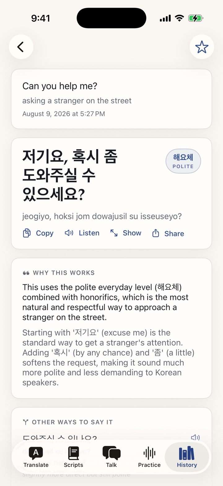
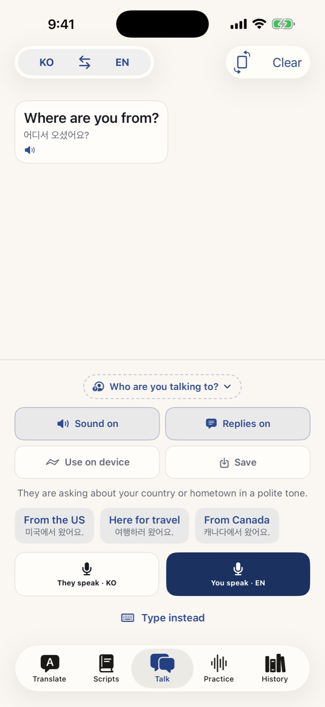
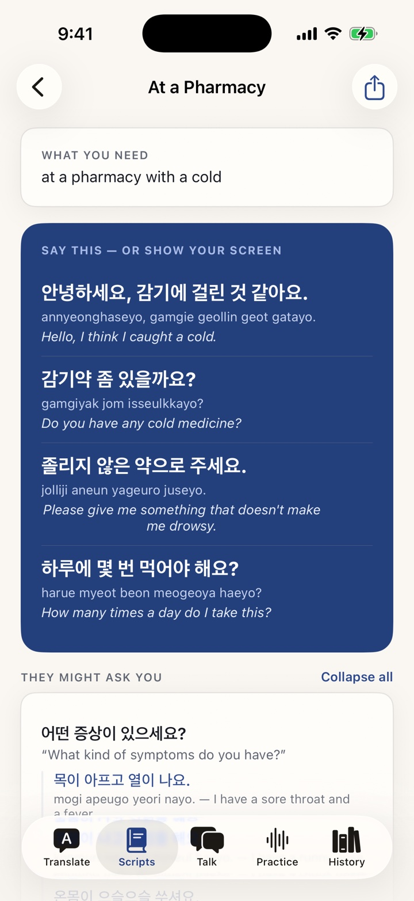
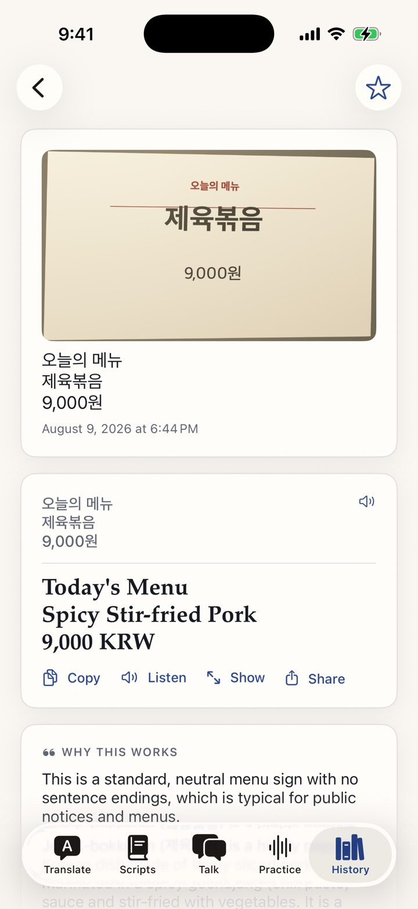
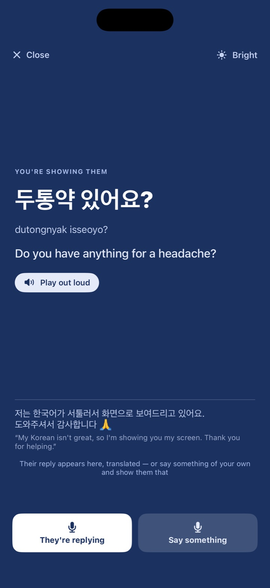

Other translators hand you words and wish you luck. Tono tells you how yours will land — so you don't come across as rude to your boss, cold to a friend, or distant to someone you love.
Free to try · Korean, Japanese, Chinese & 6 more

Get a word wrong and someone corrects you. Get the tone wrong and nobody says anything — they just quietly decide you're rude, or cold, or not worth the effort. Every other translator hands you a sentence carrying a charge you can't feel.
Every answer names its formality level in the language's own words — 해요체, 敬語, usted, Sie — and tells you plainly why that level fits. You stop guessing and hoping.
Paste the message you can't read. Tono decodes slang, shorthand and typos — and tells you what their tone reveals about where you stand with them.
Point your camera at a menu, a sign, a label. It comes back item by item, with the context a local would never need explained.
Live back-and-forth across a table. They speak, you see what they meant, and you answer by tapping a ready reply or saying your own. Split-screen shows both sides at once — one phone, two people, upright for each.
Describe what's coming — the pharmacy run, the first meeting, the visa office. Get the whole exchange: what to say, what you'll hear back, and an answer ready for each.
The first impression you only get one of — and the one where sounding too casual reads as disrespect, not warmth.
Colleagues won't tell you your Korean sounds blunt. They'll just stop asking what you think.
Friendly, formal, or flirting? The words translate easily. The signal underneath doesn't — until now.



Full screen, full brightness, and a courtesy note in their language so a stranger understands what they're looking at — and wants to help. When they answer, it listens and shows you what they said, with replies ready to tap.

Every explanation arrives in your own language — and so does the app itself. Korean is where Tono goes deepest, but the whole thing works between any two.
Or paste a message, snap a photo, or just speak it. Any of your languages, either direction.
“To my boss.” “At a market.” One line of context is all it takes to change the whole answer.
The translation, its register named and explained, and other ways to say it for other people.
Free to try on iPhone. Say what you mean — and know how it will land, before you say it.